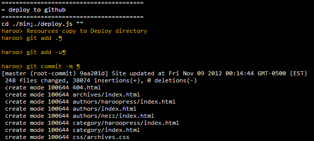

nezz
blog: http://nezz.pe.kr
twitter: @imtaehyun
github: imtaehyun
잠시나마 스티브잡스와 같은길을 걸어본 사람
현재 하루프레스는 맥에서만 사용가능하다고 하는데, 나는 집에서는 맥, 회사에서는 PC를 사용하고 있다. 그럼 회사에서는 포스팅을 할 수가 없어서 다른 방법이 있을까 찾아보다가 Cloud9이라는 서비스가 있어서 여기에 하루프레스 설치를 시도해 보았다.
참고로 Cloud9은 node.js로 만들어진 IDE툴, 터미널 등등을 제공하는 곳이며, 또한 Github의 연동도 손쉽게 할 수 있도록 만들어진 무료서비스이다. 물론 유료 서비스도 있지만 무료를 사용해도 충분하다. 가입하는 방법은 매우 쉬우므로 생략하겠다.
이제부터 Cloud9에 하루프레스를 설치하는 방법을 설명할 것이다. 하루프레스 공식홈페이지에서 설명하는 방법을 따라하면서 발생하는 오류를 살펴보고 그에 대한 대처를 어떻게 하는지를 설명한다. 맥에서 하루프레스를 한번이라도 써본 사람이라면 더 이해하기 쉬울것이다. 그럼 시작하자!
하루프레스를 설치하기 위해서는 먼저 새로운 워크스페이스를 만들어야 한다. 이를 위해 Create New Workspace버튼을 클릭하고 Clone From Url을 클릭한다.
클릭하면 Clone From Url이라는 창이 보이는데 Source Url에는 git://github.com/rhiokim/haroopress.git를 선택하고 Workspace Privacy는 Private을 선택한다. 이때 Private을 선택하면 무료 서비스에서 제공하는 비공개 워크스페이스 한개를 사용하게 된다. (물론 하루프레스를 지우면 다른 용도로도 사용 가능하다.) Public 으로 하게되면 config.js 파일이 다른사람에게도 노출될 수 있으므로 Private을 선택하는것을 추천한다.
./bin/gh-pages.js에서 에러가 발생.
현재 Cloud9에서 지원하는 node버전이 0.6.21인데 fs.existsSync()를 지원하지 않는 모양이다.
찾아보니 fs를 대신 path모듈로 수정하자.
./bin/init.js에서 에러가 발생.
위에서 발생한 에러와 이유가 같다.
설치를 성공했으니 새로운 글을 써봐야지!
make new-post로 새로운 포스트를 만들고 에디터 열어서 글도 써보았다.
그럼 정적 페이지를 만들기 위해서 make gen을 실행. 어라! 에러 발생!
에러메시지를 자세히 살펴보니 robotskirt의 모듈을 열 수 없다는것 같음!
그럼 한번 update를 받아볼까?
오! 성공적으로 update가 되었다! 그럼 다시한번 make gen 해볼까?
역시나 에러가 발생했다. 이는 Cloud 9에서 사용할 수 있게 해놓은 Host와 Port가 정해져 있기 때문이다.
그럼 하루프레스의 config.js파일을 열어보자.
기존 하루프레스에서 default로 지정한 port는 8081이다. 그러나 Cloud 9에서는 8080번만 사용 할 수 있도록 해놓았기때문에 이 부분을 수정하자!

make preview에 성공했다.
브라우저에서도 확인해 보았다. Cloud 9에서 확인 할 수 있는 주소는 haroopress.자신의 Cloud9 ID.c9.io이다.
역시나 브라우저에서도 잘 보이는것을 확인 할 수 있었다.
이제 Github 페이지에만 올리면 된다. 조금만 더 힘내자!
처음 make init때 github 주소를 정상적으로 입력했었다면 make deploy 명령으로 Github에 블로그를 올릴 수 있다.

성공했다! 잠시후 성공했다는 이메일로 도착했다.
github 페이지도 열어보자!
Github 페이지에서도 잘 보인다!!
결과적으로 Cloud 9 이라는 클라우드 서비스에서도 하루프레스 블로그를 운영할 수 있다. 물론 앞으로 업데이트 될 하루프레스에서는 될수도, 안될수도 있다. 그때마다 수정을 계속해야하는 불편함도 있을수 있고. 그러나 맥이 아닌 다른 플랫폼에서 하루프레스로 블로깅을 할 수 있다는것이 얼마나 기쁜일인가?
한가지 염두에 되야하는것은 Cloud 9에서 제공하는 터미널에서는 한글이 입력되지 않으므로 make new-post 이후에 글을 쓰는 것은 터미널이 아닌 에디터를 열어서 작성해야한다는것을 명심하자. (물론 영어로 작성할꺼라면 걱정하지 않아도 되겠다! 부럽다!)